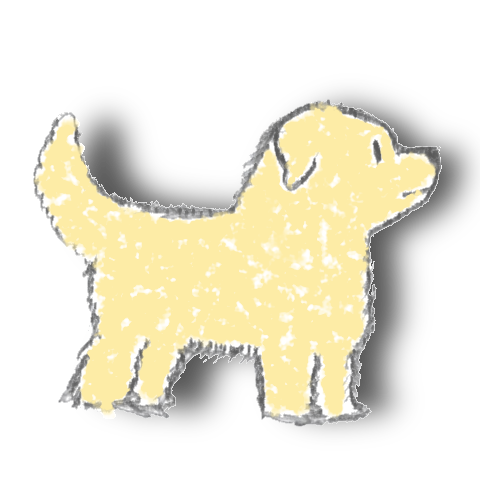

Just having some fun.
Hearthome was a project that my team and I came up with for Global Game Jam 2019. The prompt was "home", so we concepted numerous ideas until we arrived at this one. We wanted to convey the feeling of togetherness associated with the idea of being home or coming home. Being the lead artist on this project, I decided that in order to capture the warm essence of the theme, every in-game asset should be hand drawn to present a more ameteur but authentic feel. Those hand drawn assets were then scanned and touched-up digitally. As a team, we made a collective decision that GameMaker 2 would be a good engine to use when making the game, as at the time we were not that experienced in Unity and GameMaker 2 made importing assets really easy. The game can be downloaded here: LINK. I hope you have as much fun playing the game as we did making it (the game can also be played with a Guitar Hero guitar controller).

My contributions to this project were: -Lead Artist -Narrative Consultant -Soundtrack Consultant -Code Consultant -Story Board Producer -Playtester
Voluptatibus, soluta blanditiis! Incidunt ea unde itaque illo molestiae eligendi sint culpa nobis voluptas sapiente voluptate, magnam ipsum eius earum?